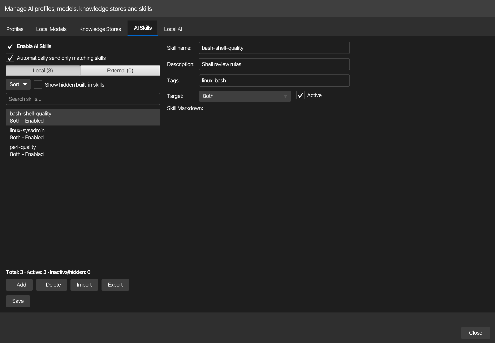
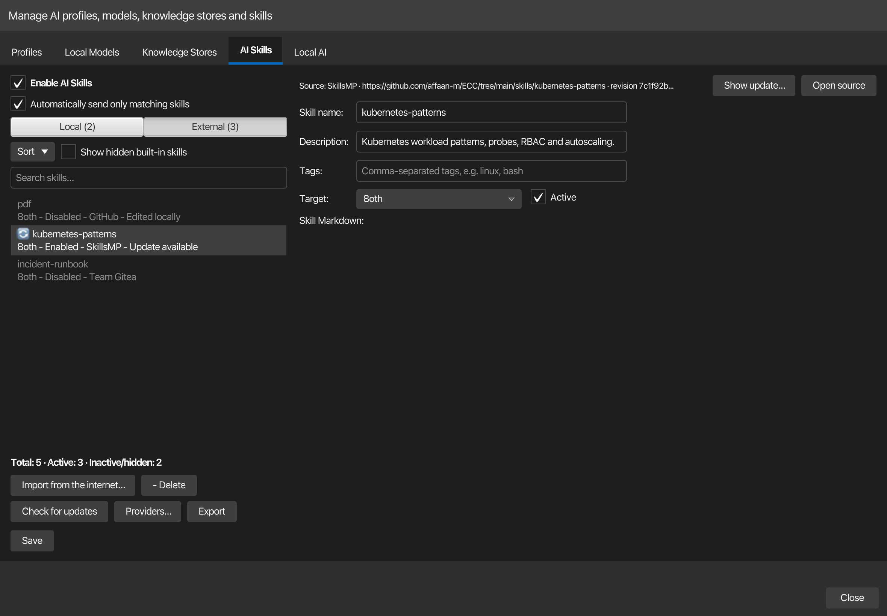
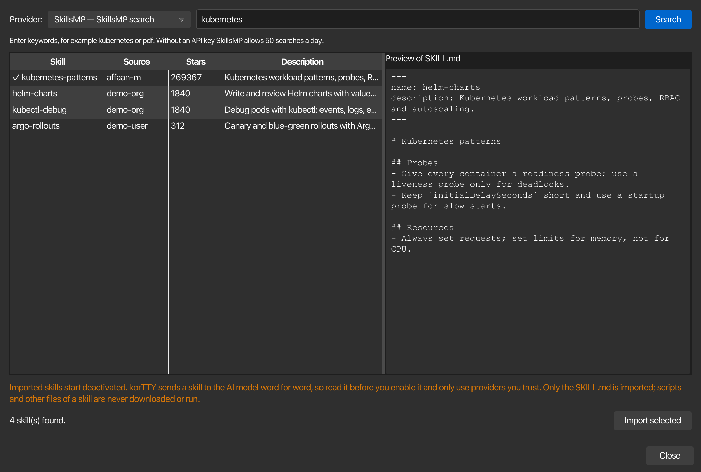
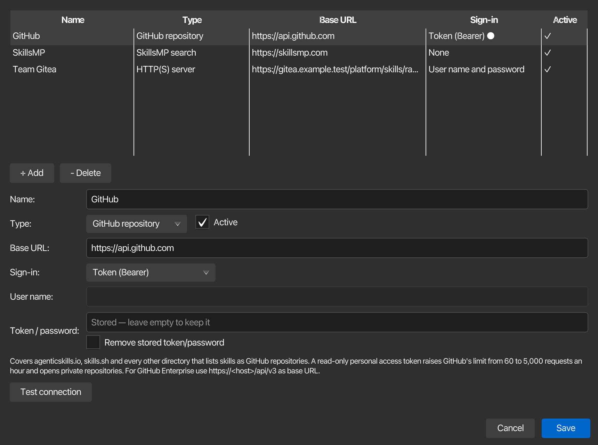

KI-Skills¶
Konfigurieren Sie benutzerdefinierte KI-Skills, die KI-Interaktionen verbessern. Dieser Tab ermöglicht es Ihnen, eine Bibliothek von markdown-basierten Skills zu verwalten, die automatisch oder manuell in KI-Anfragen einbezogen werden. Öffnen Sie über KI → KI-Manager → KI-Skills; gespeichert in ~/.kortty/global-settings.xml.
Aus den globalen Einstellungen entfernt
Die Skill-Bibliothek war früher eine Registerkarte unter Konfiguration → Globale Einstellungen. Es befindet sich jetzt im KI-Manager, neben Profilen, lokalen Modellen und Wissensspeichern. Die gespeicherten Daten und die Einstellungsdatei bleiben unverändert.

Globale Einstellungen¶
| Einstellung | Geben Sie | ein Werte | Standard | Gespeichert als |
|---|---|---|---|---|
| KI-Skills aktivieren | umschalten | – | Ein | aiSkillsEnabled |
| Automatisch nur passende Fähigkeiten senden | umschalten | – | Ein | aiSkillAutoDetectionEnabled |
| Lokal / Extern | Umschalter | Lokal: eigene und integrierte Skills; Extern: vom Internet importierte Skills | Lokal | — (Ansichtsfilter) |
| Versteckte integrierte Fähigkeiten anzeigen | umschalten | – | Aus | – (Filter anzeigen) |
| Suchfähigkeiten | Text | Filtert die Liste nach Name, Beschreibung oder Tags | – | – (Filter anzeigen) |
| Sortieren | Menüschaltfläche | Alphabetisch, Status (zuerst aktiviert) | – | – |
| Schaltfläche „Speichern“ | Schreibt die Bibliothek in die globale Einstellungsdatei | – | – |
Eine Zählzeile unterhalb der Liste fasst die gesamte Bibliothek zusammen – Gesamt, Aktiv (aktiviert und nicht ausgeblendet) und Inaktiv/ausgeblendet – unabhängig von der aktuellen Suche oder dem ausgeblendeten Filter.
Felder des Skill-Editors¶
Wenn Sie eine Fertigkeit auswählen oder erstellen, werden im rechten Bereich Felder pro Fertigkeit angezeigt. Jede Fertigkeit wird einzeln in der Fertigkeitsliste gespeichert.
| Einstellung | Geben Sie | ein Werte | Standard | Gespeichert als |
|---|---|---|---|---|
| Skill-Name | Text | — | "KI-Skill" | name (auf AiSkill-Objekt) |
| Beschreibung | Text | – | – | description |
| Tags | Text | Durch Kommas getrennte Tags (z. B. Linux, Bash) | – | tags |
| Ziel | Dropdown | KI-Chat/-Funktionen, KI-Agent, Beide, Verbindung | Beide | target |
| Aktiv | umschalten | — | Ein | enabled |
| Skill-Markdown | Text | Markdown-formatierter Skill-Inhalt | – | content |
Die Skill-Bibliothek wird in global-settings.xml gespeichert, die bestimmte unsichtbare Zeichen nicht aufnehmen kann: Steuerzeichen außer Tab, Zeilenvorschub und Wagenrücklauf, U+FFFE, U+FFFF und die Hälfte eines Surrogatpaares. Solch ein Zeichen kann auftreten, wenn Sie in den Skill-Markdown-Editor einfügen. Ein Feld, das eines enthält, zeigt darunter eine Meldung an, die das Zeichen benennt, zum Beispiel U+0007, und Speichern verweigert die Speicherung der Bibliothek und wählt das Skill aus, bis Sie das Zeichen entfernen. Wenn Sie den KI-Manager mit einem solchen Skill schließen, speichert korTTY Ihre anderen Änderungen und behält die zuletzt gespeicherte Version dieses Skills bei oder lässt einen Skill weg, der nie gespeichert wurde. Importieren entfernt solche Zeichen aus dem Namen, der Beschreibung, den Tags und dem Markdown der importierten Datei.
Eingebaute Fähigkeiten¶
korTTY bietet 39 integrierte Best-Practice-Kenntnisse für Shells (Bash, KornShell, Zsh, Csh, POSIX sh, PowerShell), Programmiersprachen (Python, C, C++, Java, C#, JavaScript, Visual Basic, SQL, R, Rust, Go, PHP, Swift, Assembly, Macro Assembler, Ruby, Perl, Lua, Groovy, TypeScript, Kotlin, Dart), Markup und Datenformate (HTML, XML, YAML, JSON) und Automatisierungs-/Beobachtbarkeitstools (Puppet, Ansible, Azure DevOps Pipelines, Jenkins Declarative and Scripted Pipelines, Filebeat, Logstash). Jeder Skill bietet professionelle Anleitungen zu Codekommentaren, Robustheit, häufig zu vermeidenden Fallstricken und sprachspezifischen Sicherheitspraktiken. Sie werden beim ersten Start zur Bibliothek hinzugefügt und erscheinen mit einem integrierten Abzeichen.
Integrierte Fertigkeiten verhalten sich wie Ihre eigenen Fertigkeiten – sie können bearbeitet, deaktiviert und Verbindungen zugewiesen werden – mit folgenden Unterschieden:
- Sie können nicht gelöscht, sondern nur ausgeblendet werden. Ausblenden entfernt eine integrierte Funktion aus der Liste und aus allen Fertigkeitsauswahlen, und eine ausgeblendete integrierte Funktion wird nicht mehr mit KI-Anfragen gesendet – selbst bei Verbindungen, denen sie zuvor zugewiesen wurde. Versteckte integrierte Fertigkeiten anzeigen zeigt versteckte Einträge an, die mit einem Versteckt-Abzeichen gekennzeichnet sind, sodass sie mit Einblenden wieder angezeigt werden können.
- Unveränderte integrierte Funktionen werden automatisch aktualisiert. Wenn eine neue korTTY-Version verbesserte Skill-Inhalte bereitstellt, werden unveränderte integrierte Funktionen beim Start automatisch ersetzt (Ihre Auswahl zwischen Aktiv/Ausgeblendet bleibt erhalten).
- Geänderte integrierte Funktionen werden nie berührt. Sobald Sie eine integrierte Funktion bearbeiten, wird für sie das Abzeichen „Integriert (geändert)“ angezeigt und die automatische Aktualisierung wird beendet. Auf die ausgelieferte Version zurücksetzen verwirft Ihre Änderungen und stellt die ausgelieferte Version wieder her, auf der Ihre Änderungen basierten. Wenn eine neuere ausgelieferte Version vorhanden ist, wird im Eintrag 🔄 Update verfügbar angezeigt und Update auf neueste ausgelieferte Version übernimmt diese.
- Ihre eigenen Fertigkeiten haben immer Vorrang. Wenn einer Ihrer aktivierten Fertigkeiten ein Tag trägt, das mit dem Thema einer integrierten Fertigkeit übereinstimmt (z. B. eine persönliche Fertigkeit mit der Bezeichnung
perl), wird die integrierte Fertigkeit unterdrückt: Sie zeigt Von Benutzerfertigkeit überschrieben an, ist ausgegraut und wird nicht mehr mit einer KI-Anfrage gesendet. Durch das Löschen oder Deaktivieren Ihres Skills wird die integrierte Funktion sofort wieder aktiviert. - Deaktivierte, ausgeblendete und überschriebene Einträge werden ausgegraut dargestellt; Dies funktioniert in jedem Anwendungsdesign-Thema.
Durch das Ausschalten der automatischen Erkennung werden integrierte Funktionen deaktiviert
Ohne automatische Erkennung wird jeder aktivierte Skill mit jeder KI-Anfrage gesendet, was bei 35 integrierten Skills die Eingabeaufforderungen massiv übersteigen würde. Wenn Sie Automatisch nur passende Fertigkeiten senden ausschalten, werden Sie daher nach einer Bestätigung gefragt und anschließend alle integrierten Fertigkeiten deaktiviert. Aktivieren Sie diejenigen, die Sie benötigen, einzeln wieder. In späteren Versionen bereitgestellte integrierte Funktionen sind ebenfalls deaktiviert, wenn die automatische Erkennung deaktiviert ist.
Externe Skills¶
Die Externe-Ansicht listet Skills auf, die aus Internet-Skill-Verzeichnissen importiert wurden. Externe Skills befinden sich in derselben Bibliothek wie Ihre eigenen Skills: Sobald Sie einen aktivieren, wird er ausgewählt und genau wie ein lokaler Skill gesendet. Die Anzahl auf jedem Umschaltknopf zeigt, wie viele Skills jede Ansicht enthält.

| Schaltfläche | Was es tut |
|---|---|
| Aus dem Internet importieren… | Öffnet den Importdialog: wählen Sie einen Anbieter, suchen, zeigen Sie eine SKILL.md-Vorschau an und importieren die ausgewählten Skills |
| Auf Updates prüfen | Fragt jeden externen Skill-Anbieter nach seiner aktuellen Version; Skills mit einer neueren Version zeigen 🔄 Update verfügbar |
| Anbieter… | Öffnet die Anbietertabelle mit Anmeldedaten (siehe unten) |
| Löschen / Exportieren | Gleich wie bei lokalen KI-Skills |
Importierte Skills starten deaktiviert
korTTY übermittelt den Text einer Skill wortwörtlich an das KI-Modell, sodass ein aus dem Internet importierter Skill Anweisungen enthalten kann, die Sie nicht wünschen. Jeder importierte Skill kommt daher deaktiviert, unabhängig davon, was in seiner Front-Matter steht. Öffnen Sie ihn im Editor, aktivieren Sie dann Aktiv und klicken Sie auf Speichern. Nur die Datei SKILL.md wird importiert; Skripte, Referenzdateien und andere Dateien, die zu einem Skill gehören, werden nie heruntergeladen oder ausgeführt.
Wenn ein externes KI-Skill ausgewählt wird, zeigt das Banner über dem Editor den Anbieter, die Quelle und die importierte Revision an. Quelle öffnen öffnet die Seite des KI-Skills im Browser. Wenn Sie den Text bearbeiten, markieren das Banner und die Liste das KI-Skill als Lokal geändert. Nachdem Auf Updates prüfen eine neuere Version gefunden hat, öffnet Update anzeigen… einen nebeneinander gestellten Vergleich zwischen Ihrer Version und der des Anbieters. Update übernehmen ersetzt den Text und die Beschreibung und behält Ihren Namen, Ihre Tags, Ihr Ziel und Ihren aktiven Status bei; lokale Änderungen am Text werden ersetzt, was der Dialog hervorhebt. Ohne diese Bestätigung wird nichts aktualisiert.
KI-Skills importieren¶

Anbieter wählen, geben Sie eine Suche ein und klicken Suchen. Das Auswählen eines Ergebnisses lädt dessen SKILL.md in die Vorschau. Wählen Sie ein oder mehrere Ergebnisse aus und klicken Auswahl importieren; Ergebnisse mit ✓ sind bereits in der Bibliothek und werden übersprungen. Was Sie eingeben, hängt vom Typ des Anbieters ab:
| Anbietertyp | Eingabe | Beispiel |
|---|---|---|
| GitHub-Repository | Suchbegriffe zum Durchsuchen SKILL.md Dateien auf GitHub (benötigt ein Token), owner/repo für jedes Skill eines Repositories, owner/repo@skill oder ein GitHub-Link für ein einzelnes Skill; aus agenticskills.io oder skills.sh kopierte Befehle funktionieren ebenfalls |
python testing, anthropics/skills, npx skills add anthropics/skills@pdf |
| SkillsMP-Suche | Keywords | kubernetes |
| HTTP(S)-Server | Die URL einer SKILL.md-Datei oder ein Pfad relativ zum Basis-URL des Anbieters |
incident/SKILL.md |
Kataloge wie agenticskills.io und skills.sh veröffentlichen ihre Skills als GitHub-Repositories, daher importiert der GitHub-Provider von allen davon. korTTY liest Repositories über die GitHub REST API unter https://api.github.com (API-Version 2022-11-28) und merkt sich die Git-Revision jedes importierten SKILL.md, sodass ein Commit, der andere Dateien des Repositories ändert, nicht als Update gemeldet wird. Ohne Token erlaubt GitHub 60 Anfragen pro Stunde; ein Import benötigt ein oder zwei. GitHub beantwortet eine Suchbegriffssuche nur mit Token: ohne Token erklärt der Dialog dies und bietet Stattdessen auf SkillsMP suchen an, der dieselben GitHub-Skills ohne Anmeldung durchsucht. Suchbegriffe müssen nicht exakt übereinstimmen; jedes Wort muss irgendwo im SKILL.md vorkommen.
Der SkillsMP-Provider durchsucht den SkillsMP-Index über https://skillsmp.com/api/v1/skills/search. Ohne einen API-Schlüssel erlaubt SkillsMP 50 Suchen pro Tag, mit einem Schlüssel 500. Die gefundenen Skills werden von GitHub über den aktiven GitHub-Provider für github.com heruntergeladen, unter Verwendung des Tokens dieses Providers.
Anbieter¶

Anbieter… öffnet eine Tabelle mit Skill-Anbietern, die Sie nach Belieben erweitern können. korTTY startet mit einem GitHub- und einem SkillsMP-Anbieter; fügen Sie weitere mit + Hinzufügen hinzu, z. B. einen GitHub-Enterprise-Server oder den eigenen Server eines Teams. Das Löschen eines Anbieters behält die daraus importierten Skills bei, diese können jedoch nicht mehr auf Updates geprüft werden.
| Feld | Werte | Gespeichert als |
|---|---|---|
| Name | Jeder Name | aiSkillProviders/provider/name |
| Typ | GitHub-Repository, SkillsMP-Suche, HTTP(S)-Server | type |
| Aktiv | Nur aktive Anbieter erscheinen im Importdialog | enabled |
| Basis-URL | Leer verwendet den Standard des Typs (https://api.github.com, https://skillsmp.com); für GitHub Enterprise verwenden Sie https://<host>/api/v3 |
baseUrl |
| Anmeldung | Keine, Token (Bearer), Benutzername und Passwort (HTTP Basic) | auth |
| Benutzername | Nur für Benutzername und Passwort | username |
| Token / Passwort | ein GitHub-Personal-Access-Token, ein SkillsMP-API-Schlüssel oder das Serverpasswort | encryptedSecret, verschlüsselt mit dem Master-Passwort |
Verbindung testen prüft, ob der Anbieter antwortet und die Anmeldedaten akzeptiert, und zeigt das verbleibende Anfragekontingent an, sofern der Anbieter eines meldet. Ein Token oder Passwort wird mit dem Master-Passwort verschlüsselt, wenn Sie auf Speichern klicken; falls der Tresor gesperrt ist, bietet korTTY an, ihn zu entsperren. Lassen Sie das Feld leer, um einen gespeicherten Token beizubehalten, oder aktivieren Sie Gespeicherten Token bzw. Passwort entfernen, um ihn zu löschen.
Netzwerksicherheit
korTTY kommuniziert ausschließlich über HTTPS mit Anbietern; reines HTTP wird nur für diesen Computer akzeptiert (localhost). Weiterleitungen werden nicht verfolgt, sodass ein Token oder Passwort niemals an einen anderen Host weitergeleitet wird, und ein SKILL.md größer als 256 KiB wird abgelehnt.
Notizen¶
Automatisches Erkennungsverhalten
Wenn Nur übereinstimmende Fertigkeiten automatisch senden aktiviert ist, bewertet korTTY jede Fertigkeit anhand der aktuellen Anfrage in vier Feldern – Tags, Name, Beschreibung und die Überschriften im Markdown der Fertigkeit – und schließt höchstens die zwei Fertigkeiten mit der höchsten Bewertung ein, die den Relevanzschwellenwert erreichen (Gleichstände nach Katalogreihenfolge aufgelöst). Explizit angeheftete und verbindungszugewiesene Fertigkeiten werden zusätzlich hinzugefügt und verbrauchen dieses Limit nicht. Wenn die lokalen Bewertungen nicht schlüssig sind (keine oder eine passende Fähigkeit oder genau zwei übereinstimmende mit nahezu gleichen Bewertungen), bittet korTTY das Modell zusätzlich, die Anfrage zu klassifizieren und bevorzugt diese Antwort – ebenfalls begrenzt auf zwei Fähigkeiten – und greift auf das lokale Ergebnis zurück, wenn der Anruf fehlschlägt. Bei Deaktivierung werden alle anwendbaren Fertigkeiten ohne Bewertung gesendet – eine Fertigkeit wird weiterhin übersprungen, wenn sie inaktiv ist, leeren Inhalt hat oder nicht mit dem aktuellen Ziel übereinstimmt.
Fertigkeitsziele
- KI-Chat/Funktionen: Fähigkeiten, die in KI-Chat- und Funktionsaufrufkontexten verfügbar sind
- KI-Agent: Vom Terminal-KI-Agenten verwendete Fähigkeiten
- Beide: Verfügbar sowohl für AI Chat- als auch für AI Agent-Kontexte
- Verbindung: Spezielle Fähigkeiten für die Handhabung von SSH-Verbindungen
Skill-Lebenszyklus
Skills werden als XML-Elemente innerhalb der globalen Einstellungen gespeichert. Verwenden Sie Importieren, um Skills aus Markdown-Dateien zu laden, und Exportieren, um ausgewählte Skills als Markdown-Dateien zu speichern; um Skills aus Internetverzeichnissen zu importieren, nutzen Sie die Externe Ansicht (siehe oben). Löschen gilt nur für Ihre eigenen Skills; eingebaute Skills werden stattdessen ausgeblendet (siehe oben). Zurücksetzen, Aktualisieren, Ausblenden und Einblenden sind im Kontextmenü der Liste sowie im Banner über dem Editor verfügbar, wenn ein eingebauter Skill ausgewählt ist. Die Skill-Liste kann alphabetisch nach Namen oder Status (erst aktiviert) sortiert werden. Speichern speichert die Bibliothek sofort und bestätigt neben dem Button; ausstehende Änderungen werden ebenfalls geschrieben, wenn das KI-Manager-Fenster geschlossen wird. Das Importieren einer Markdown-Datei erzeugt immer einen unabhängigen Benutzerskill – auch wenn die Datei aus einem eingebauten Skill exportiert wurde.
Auswahl der Fähigkeiten pro Anfrage
Dieser Tab verwaltet die globale Bibliothek. Welche der hier aktivierten KI-Skills einer bestimmten Aktion entsprechen, wird anderswo gewählt: Der KI-Skills-Auswahlfeld im Snippet-Editor bindet Ihre Auswahl an jede Aktion im Snippet-Editor, während das Fenster „Vollständige Code-Analyse“ die enthaltenen Skills als Chips anzeigt – mit den Bezeichnungen (automatisch) oder (manuell) – und ein suchbares Auswahlfeld, dessen Änderungen beim nächsten Neustart wirksam werden. Innerhalb der Snippet-Aktionen wird das Auswahlfeld die automatische Erkennung ersetzen: Nur die markierten KI-Skills sowie die Skills, die der Verbindung zugewiesen sind, werden übermittelt, und das Entfernen des Auswahlfelds sendet keine Bibliotheks-Skills. Die Snippet-Aktionen „Richtig machen“ und „Übersetzen“ sowie die feste Anfrage „Diagramm“ enthalten nie Bibliotheks-Skills, unabhängig von Ziel oder Pinning. Siehe Snippets → KI-Skills.